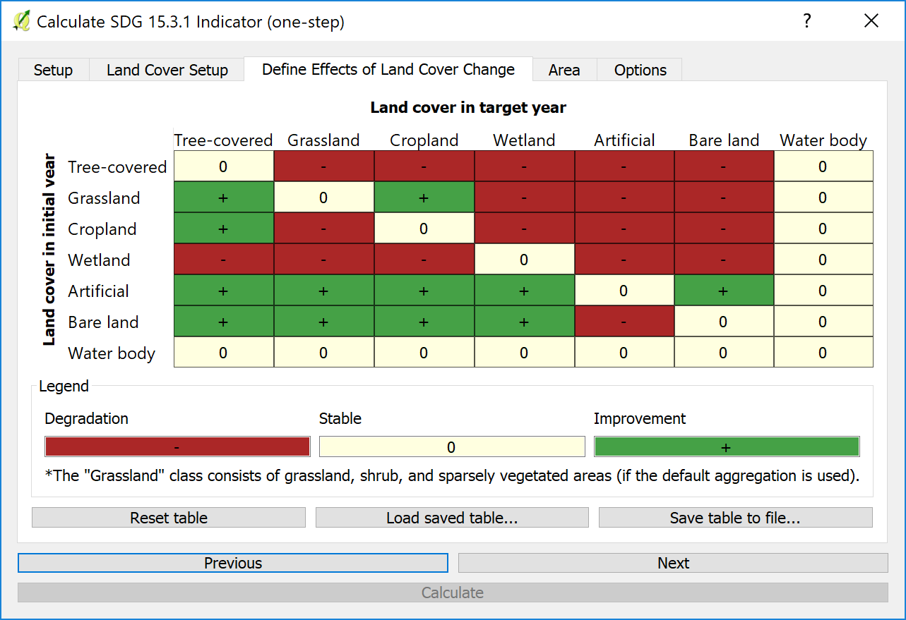

Calculer les indicateurs¶

Développement durable L’objectif 15.3 vise à lutter contre la désertification, à restaurer les terres et les sols dégradés, y compris les terres touchées par la désertification, la sécheresse et les inondations, et à atteindre un monde neutre en termes de dégradation des terres d’ici 2030. L’indicateur de l’ODD 15.3 (proportion de la superficie des terres dégradées) est une combinaison de trois sous-indicateurs: l’évolution de la productivité des terres, la modification de la couverture des terres et la modification du carbone organique des sols.
Sommaire
To select the methods and datasets to calculate these indicators, indicators click on the calculator icon highlighted above. This will open up the « Calculate Indicators » dialog box.

Sélectionnez l'indicateur de dégradation des terres (indicateur SDG 15.3.1) pour ouvrir la fenêtre de cette analyse.

There are several options for calculating the SDG 15.3.1 Indicator. LDMS supports calculating the indicator using the same process as was used by the UNCCD for the default data provided to countries for the 2018 reporting process. The tool also supports customizing this data, or even replacing individual datasets with national-level or other global datasets.
Pour calculer les trois indicateurs de l’ODD 15.3.1 en une seule étape, en utilisant les paramètres par défaut pour la plupart des indicateurs, cliquer sur «Calculer les trois indicateurs en une seule étape».
Pour calculer l’un des trois indicateurs de l’ODD 15.3.1, en utilisant des paramètres personnalisés ou des données au niveau national, cliquez sur «Productivité», «Couverture terrestre» ou «Carbone organique du sol».
Pour obtenir un tableau récapitulatif présentant des statistiques sur chacun des trois indicateurs, cliquez sur « Calculer l’indicateur final de l’ODD 15.3.1 et le tableau récapitulatif ». Notez que vous devez d’abord calculer les indicateurs en utilisant l’une des options ci-dessus.
Pour calculer un tableau récapitulatif présentant des statistiques sur chacun des trois indicateurs pour plusieurs sous-divisions, cliquez sur « Calculer des résumés de zones d’un raster sur des sous-unités ». Notez que vous devez d’abord calculer les indicateurs en utilisant l’une des options ci-dessus.
Trois indicateurs différents sont combinés pour créer l’indicateur de l’ODD 15.3.1
Productivité: mesure la trajectoire, la performance et l’état de la productivité primaire
Couverture terrestre: calcule le changement de couverture terrestre par rapport à une période de référence, complète une matrice de transition montrant les transitions indicatrices d’une dégradation, d’une stabilité ou d’une amélioration.
Carbone du sol: calcule les changements du carbone organique du sol suite aux changements de la couverture terrestre.
Note
Refer to the Indicateur ODD 15.3.1 section of this manual for a detailed explanation of how each of these sub-indicators is computed in LDMS
Il existe deux façons de calculer les indicateurs: 1) utiliser un outil simplifié qui calculera les trois indicateurs en même temps, mais avec des options limitées de personnalisation, ou 2) utiliser des outils individuels pour chaque indicateur qui offrent un contrôle complet sur la façon dont ils sont calculés.
Calculer les indicateurs avec un outil simplifié¶
Cet outil permet aux utilisateurs de calculer les trois sous-indicateurs en une seule étape. Sélectionnez le bouton « Calculer les trois sous-indicateurs en une étape ».
Sélectionner les paramètres de Configuration. La Période est l’Année initiale et finale de l’analyse et sélectionner l’un des deux jeux de données sur la Productivité des terres. Sélectionner Suivant.
Sélectionner le jeu de données Couverture terrestre. La première option est l’ensemble de données ESA par défaut.

Sélectionner Modifier la définition pour modifier l’agrégation de l’ensemble de données ESA sur la couverture terrestre en 7 classes.

La seconde option permet aux utilisateurs de télécharger un jeu de données de couverture terrestre personnalisé. Cela nécessite deux jeux de données pour comparer les changements dans le temps. Sélectionner Suivant.
L’utilisateur peut maintenant définir les effets du changement de couverture terrestre et comment il est classé comme en dégradation ou en amélioration.
Sélectionner une zone pour exécuter l’analyse ou télécharger une limite de shapefile
Note
The provided boundaries are from Natural Earth, and are in the public domain. The boundaries and names used, and the designations used, in LDMS do not imply official endorsement or acceptance by Conservation International Foundation, or by its partner organizations and contributors.
If using LDMS for official purposes, it is recommended that users choose an official boundary provided by the designated office of their country.

Désigner la tâche et prendre des notes pour référence future
Cliquez sur « Calculer » pour soumettre votre tâche à Google Earth Engine
Calculer la productivité¶
Note
Reportez-vous à l’information Productivité dans ce manuel pour une explication détaillée de la façon dont la productivité est calculée.
La productivité mesure la trajectoire, la performance et l’état de la productivité primaire en utilisant des ensembles de données AVHRR à 8 km ou MODIS à 250m. L’utilisateur peut sélectionner un ou plusieurs indicateurs à calculer, l’ensemble de données du NDVI, nommer les tâches et entrer des notes explicatives pour la zone de notification prévue.
Trajectoire de la productivité¶
La trajectoire évalue le taux de variation de la productivité au fil du temps. Pour calculer la trajectoire:
Note
Reportez-vous à la section Trajectoire de la productivité de ce manuel pour une explication détaillée du calcul de cet indicateur.
Sélectionner un indicateur à calculer
Sélectionner le jeu de données NDVI à utiliser et sélectionner Suivant
Note
L’intervalle valide de dates est défini par le jeu de données NDVI sélectionné dans le premier onglet: les dates AVHRR comparent 1982-2015 et MODIS 2001-2016.

Dans l’onglet « Avancé », sélectionnez la méthode à utiliser pour calculer l’analyse de trajectoire de productivité. Les options sont:
Note
Reportez-vous à l’information Correction des effets du climat dans ce manuel pour une explication plus détaillée de chacun de ces calculs.
Tendance du NDVI: Cet ensemble de données montre la tendance des séries temporelles NDVI intégrées annuellement (2001-2015) en utilisant un jeu de données MODIS (250m) (MOD13Q1) ou AVHRR (8km, GIMMS3g.v1). L’indice de végétation par différence normalisée (NDVI) est le rapport entre la différence entre la bande proche infrarouge (NIR) et la bande rouge (RED) et la somme de ces deux bandes (Rouse et al., 1974, Deering 1978, revu dans Tucker 1979).
CEP: défini comme le rapport entre la production primaire nette (PPN), en l’occurrence les intégrales annuelles du NDVI, et les précipitations. Il est de plus en plus utilisé pour analyser la variabilité de la production végétale dans les biomes arides et semi-arides, où les précipitations sont un facteur limitant majeur pour la croissance des plantes.
RESTREND: cette méthode tente d’ajuster les signaux du NDVI de l’effet de facteurs climatiques particuliers, tels que les précipitations ou l’humidité du sol, en utilisant une régression linéaire pixel par pixel sur les séries temporelles du NDVI et le signal climatique. Le modèle linéaire et les données climatiques servent ensuite à prédire le NDVI et à calculer les résidus entre les intégrales annuelles du NDVI observées et prédites par le climat. La tendance résiduelle du NDVI est finalement tracée pour représenter spatialement les tendances globales de la productivité primaire, indépendamment du climat.
EUE: définie comme le rapport entre la production primaire nette (PPN), en l’occurrence les intégrales annuelles du NDVI, et l’évapotranspiration.
Performance de la productivité¶
La performance est compare la productivité dans une zone à la productivité dans des zones similaires au même moment. Pour calculer la performance:
Sélectionner l’année de début et de fin de la période d’analyse pour la comparaison.
Note
Reportez-vous à la section Performance de la productivité de ce manuel pour une explication détaillée du calcul de cet indicateur.
État de la productivité¶
L’état compare la productivité actuelle dans une région à la productivité passée. Pour calculer l’état:
Définir les périodes de référence et de comparaison pour le calcul du sous-indicateur Etat.
Note
Reportez-vous à la section État de la productivité de ce manuel pour une explication détaillée du calcul de cet indicateur.
L’étape suivante consiste à définir la zone d’étude sur laquelle effectuer l’analyse. L’outil permet de sélectionner la zone d’intérêt de l’une des deux façons suivantes:
Sélectionne la première limite administrative (c’est-à-dire le pays) et / ou la seconde (c’est-à-dire la province ou l’état) à partir d’un menu déroulant.
L’utilisateur peut fournir un shapefile, KML ou geojson définissant une zone d’intérêt. Une fois cela fait, sélectionner Suivant.

L’étape suivante consiste à écrire un nom de tâche et des notes pour indiquer les options sélectionnées pour l’analyse.

Tous les paramètres définis, cliquez sur Calculer, et la tâche sera soumise à Google Earth Engine pour traitement. Une fois la tâche finalisée (le temps de traitement varie en fonction de l’utilisation du serveur, mais dans la plupart du pays, il faut seulement quelques minutes), vous recevrez un message électronique indiquant son achèvement.
Lorsque la tâche Google Earth Engine est terminée et que vous avez reçu l’e-mail, cliquez sur Actualiser la liste et l’état indique FINI. Cliquez sur la tâche et sélectionnez Télécharger les résultats en bas de la fenêtre. Une fenêtre s’ouvrira pour vous permettre de sélectionner où sauvegarder la couche et lui assigner un nom. Puis cliquez sur « Enregistrer ». La couche sera enregistrée sur votre ordinateur et chargée automatiquement dans votre projet QGIS actuel.

Calculer la couverture terrestre¶
Le changement de la couverture terrestre est l’un des indicateurs utilisés pour suivre la dégradation potentielle des terres qu’il faut rapporter à la CNULCD et pour assurer la réalisation de l’ODD 15.3.1. Si certaines transitions de la couverture terrestre indiquent dans la plupart des cas des processus de dégradation des terres, l’interprétation de ces transitions dépend surtout du contexte. Pour cette raison, l’indicateur exige la contribution de l’utilisateur pour identifier les changements qui peuvent être considérés comme une dégradation, une amélioration ou une stabilité. L’outil permet à l’utilisateur de calculer le changement de la couverture terrestre par rapport à une période de référence et de compléter une matrice de transition qui montre les transitions indicatrices d’une dégradation, d’une stabilité ou d’une amélioration.
Note
Reportez-vous à l’information Couverture terrestre dans ce manuel pour une explication détaillée du calcul du changement de la couverture terrestre.
Pour calculer l’indicateur de changement de couverture terrestre:
Cliquer sur le bouton Calculer les indicateurs dans la barre d’outils, puis sélectionner Couverture terrestre.

Dans l’onglet « Configuration de la couverture terrestre », l’utilisateur sélectionne les années de référence et les années cibles

L’agrégation de la couverture terrestre peut être personnalisée à l’aide du bouton « Modifier la définition ». L’utilisateur peut définir sa propre agrégation de classes de couverture terrestre parmi les 37 classes de couverture terrestre de l’ESA pour les 7 catégories de la CNULCD.
Sélectionnez le bouton de numérotation pour l’option « Personnalisé » et sélectionnez « Créer une nouvelle définition »
Modifier l’agrégation adaptée à la zone d’intérêt
Sélectionnez « Enregistrer la définition » et sélectionnez Suivant

Dans l’onglet «Définir la dégradation», définissez la signification de chaque transition de couverture terrestre en termes de dégradation. Les options sont: stable (0), dégradation (-) ou amélioration (+). Par exemple, la valeur par défaut pour les terres cultivées en terres cultivées est 0 car la couverture terrestre reste la même et est donc stable. La valeur par défaut pour les forêts sur les terres cultivées est de -1 parce que la forêt est probablement coupée pour laisser la place à l’agriculture et serait considérée comme la déforestation. L’utilisateur est encouragé à évaluer soigneusement la signification de chaque transition en fonction de sa connaissance de la zone d’étude, car cette matrice aura un effet important sur la dégradation des terres identifiée par ce sous-indicateur.
Les utilisateurs peuvent conserver les valeurs par défaut ou créer leurs propres valeurs de transition.

L’étape suivante consiste à définir la zone d’étude sur laquelle effectuer l’analyse. La boîte à outils permet d’effectuer cette tâche de deux manières:
L’utilisateur sélectionne une première limite administrative (pays) puis une deuxième (province ou État) sur un menu déroulant.
L’utilisateur peut télécharger un shapefile avec une zone d’intérêt.

L’étape suivante consiste à ajouter le nom de la tâche et les notes pertinentes pour l’analyse.

Tous les paramètres définis, cliquez sur Calculer, et la tâche sera soumise à Google Earth Engine pour traitement. Une fois la tâche finalisée (le temps de traitement varie en fonction de l’utilisation du serveur, mais dans la plupart du pays, il faut seulement quelques minutes), vous recevrez un message électronique indiquant son achèvement.
Lorsque la tâche Google Earth Engine est terminée et que vous avez reçu l’e-mail, cliquez sur Actualiser la liste et l’état indique FINI. Cliquez sur la tâche et sélectionnez Télécharger les résultats en bas de la fenêtre. Une fenêtre s’ouvrira pour vous permettre de sélectionner où sauvegarder la couche et lui assigner un nom. Puis cliquez sur « Enregistrer ». La couche sera enregistrée sur votre ordinateur et chargée automatiquement dans votre projet QGIS actuel.

Calculer le carbone du sol¶
Le carbone organique du sol est calculé comme un indicateur des stocks de carbone. Il est mesuré à l’aide des données sur le sol et des changements de la couverture terrestre.
Note
Reportez-vous à l’information Carbone organique du sol dans ce manuel pour une explication détaillée du calcul du changement du carbone organique du sol.
Pour calculer la dégradation du carbone organique du sol:

Sélectionner le bouton Carbone organique du sol sous Calculer les indicateurs

L’onglet Configuration de la couverture terrestre permet à l’utilisateur de définir la période d’analyse avec la référence et l’année cible. Les utilisateurs peuvent sélectionner le bouton Modifier la définition pour modifier la méthode d’agrégation de la couverture terrestre ou télécharger un ensemble de données.

L’onglet « Avancé » permet aux utilisateurs de spécifier le régime climatique.

Les utilisateurs peuvent sélectionner une zone ou télécharger un shapefile polygone pour l’analyse

L’étape suivante consiste à ajouter le nom de la tâche et les notes pertinentes pour l’analyse.
Tous les paramètres définis, cliquez sur Calculer, et la tâche sera soumise à Google Earth Engine pour traitement. Une fois la tâche finalisée (le temps de traitement varie en fonction de l’utilisation du serveur, mais dans la plupart du pays, il faut seulement quelques minutes), vous recevrez un message électronique indiquant son achèvement.
Lorsque la tâche Moteur Google Earth est terminée et que vous avez reçu l'e-mail, cliquez sur "Actualiser la liste" pour afficher l'état FINISHED. Cliquez sur la tâche et sélectionnez "Télécharger les résultats" en bas de la fenêtre. Une fenêtre contextuelle s'ouvrira pour vous permettre de sélectionner l'emplacement d'enregistrement du calque et de lui attribuer un nom. Puis cliquez sur "Enregistrer". La couche sera sauvegardée sur votre ordinateur et automatiquement chargée dans votre projet QGIS actuel.

Calculer l’indicateur de l’ODD 15.3.1¶
Note
Reportez-vous à la section: ref: indicateur-15-3-1-combinaison-indicateurs de ce manuel pour une explication détaillée de la façon dont les sous-indicateurs sont combinés pour calculer l’indicateur final de l’ODD 15.3.1.
Une fois que vous avez calculé les trois sous-indicateurs (productivité, couverture terrestre et carbone organique du sol), ils sont chargés dans le projet QGIS. Cliquez sur l’icône Calculer (| iconCalculator |). Cela ouvrira la boîte de dialogue « Calculer l’indicateur ». Cette fois, cliquez sur l’étape 2 « Calculer l’indicateur final SDG 15.3.1 et le tableau récapitulatif ».
La fenêtre de saisie s’ouvrira déjà avec les sous-indicateurs corrects (si vous les avez chargés sur la carte QGIS)

Sélectionnez le nom et l’emplacement où enregistrer la couche raster en sortie et le fichier Excel avec les zones calculées.
Définir la zone d’analyse. Dans cet exemple, la frontière du pays.

Donnez un nom à la tâche et cliquez sur « Calculer »

Ce calcul est exécuté sur votre ordinateur. En fonction de la taille de la zone et de la puissance de calcul de votre ordinateur, cela peut prendre quelques minutes. Une fois terminé, l’indicateur final de l’ODD sera chargé dans la carte QGIS et le fichier Excel avec les zones sera sauvegardé dans le dossier que vous avez sélectionné. Une fois terminé, un message apparaîtra.

Cliquez sur OK et deux couches seront chargées sur votre carte: les indicateurs productivité pour 5 classes et ODD 15.3.1.

Si vous accédez au dossier que vous avez sélectionné pour stocker les fichiers, vous pouvez ouvrir les fichiers Excel avec les zones calculées pour chacun des sous-indicateurs et le SDG final. Remarque: vous pouvez obtenir un message d’erreur lors de l’ouverture du fichier, cliquez simplement sur OK et le fichier s’ouvrira malgré tout. Nous travaillons à corriger cette erreur.